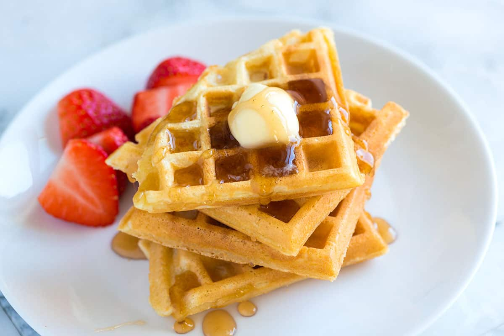

Waffles

Description
Light and crispy waffles!
An easy and fast recipe to make waffles when you want a little cheeky snack
Ingredients
- 1 cup (130 grams) all-purpose flour
- 1/4 cup (30 grams) cornstarch
- 1/2 teaspoon fine sea salt
- 1/2 teaspoon baking powder
- 1/4 teaspoon baking soda
- 1 tablespoon sugar
- 1 cup (235 ml) buttermilk or milk
- 1/3 cup (80 ml) vegetable oil
- 1 teaspoon vanilla extract
- 1 large egg
- Butter, syrup and/or berries, for serving
Instructions
- Whisk together the flour, cornstarch, salt, baking powder, baking soda, and sugar in a large bowl.
- In a separate bowl, whisk the buttermilk, oil, and vanilla extract.
- For the lightest waffles, separate the egg. Whisk the egg yolk into the milk mixture. If you do not plan on separating the egg, whisk the whole egg into the milk mixture.
- If you separate the egg, add the egg white to another bowl, use a handheld mixer to beat until stiff, and then set aside.
- Whisk the milk mixture into the dry ingredients until only small lumps are left. Switch to a rubber spatula and gently fold in the whipped egg whites.
- Set the batter aside for five to ten minutes while preparing the waffle iron.
- Heat the waffle iron to the highest heat setting.
- Cook waffles until golden and crisp, adding enough batter to the waffle iron to fill the entire lower grid. If the waffles look too dark, turn the heat down slightly.
- Serve the waffles immediately or keep them warm and crispy on a rack in a 200°F oven until ready to serve. Stacking them outside the oven will cause them to steam and become floppy.